CLAUDE’S PICK


RAG 시스템의 청킹 전략 최적화 가이드
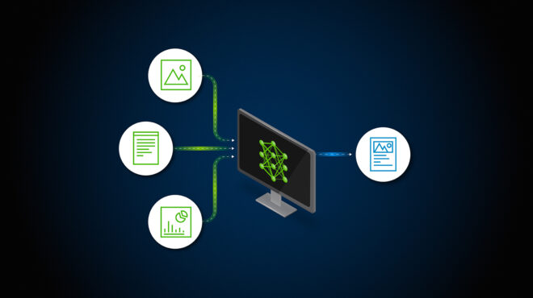
대용량 문서를 AI 검색에 활용할 때 잘못된 청킹 방식은 관련 없는 검색 결과, 비효율성, 비즈니스 가치 감소를 초래한다. NVIDIA의 연구는 다양한 데이터셋을 대상으로 페이지 레벨, 섹션 레벨, 토큰 기반 등 여러 청킹 전략을 실험하여 검색 증강 생성(RAG) 시스템의 검색 정확도와 문맥 일관성을 개선하는 최적 청킹 방법론을 제시한다. 올바른 청킹 전략은 생성 응답의 품질 향상, 사용자 만족도 증대, 운영 비용 절감으로 이어진다.
핵심 포인트: 핵심 기여: 다양한 데이터셋 실험을 통해 사용 사례별 최적 청킹 전략 선정 기준을 확립하고, 스마트 청킹이 검색 정확도 및 문맥 일관성을 직접 향상시켜 RAG 시스템 전체 효율성을 결정하는 핵심 설계 요소임을 입증했다.
🔗 developer.nvidia.com/blog/finding-the-bes…
기타 (Others)
Beyond Chunk-Then-Embed — 정보 검색을 위한 문서 청킹 전략 분류 및 평가
밀집 검색 시스템에서 문서 청킹 전략의 설계 공간이 충분히 이해되지 못한 상태이다. 이 논문은 고정 크기, 문장 기반, 문단 기반 등의 구조 기반 방법부터 LLM 기반 방법, 맥락화된 청킹까지 기존 전략을 통합하는 체계적 프레임워크를 제시한다. 문서 내 검색과 코퍼스 내 검색 두 가지 설정에서 광범위한 평가를 수행하여 각 방식의 효과성을 정량적으로 비교 분석하고, 최적 청킹 전략이 작업에 따라 달라짐을 실증한다.
핵심 포인트: 핵심 기여: 문서 청킹 전략에 대한 최초의 포괄적 분류 체계 제시. 문서 내 검색에서는 LumberChunker가 최우수 성능을 보이고, 코퍼스 내 검색에서는 단순 구조 기반 방법이 LLM 기반 방법을 능가하며, 맥락화된 청킹이 작업별로 상반된 효과를 드러낸다.
논문 (Papers)
SetwiseEvalKit: LLM 시대 문서 집합 품질 평가와 최적화
기존 검색 평가 시스템은 문서를 독립적으로 채점하고 nDCG로 집계하여 문서 간 상호작용(중복성, 충돌, 상호보완성)을 무시하는 문제가 있다. 본 논문은 9개 차원 28K 고품질 루브릭으로 구성된 SetwiseEvalKit 벤치마크와 Rubric4Setwise 방법을 제안하여, 문서 집합 평가에서 진단, 최적화까지의 완전한 프레임워크를 제시한다. 이를 통해 더 적은 문서와 검색 라운드로 LLM 생성 품질을 최대화한다.
핵심 포인트: 핵심 기여: 12개 리랭커 평가 결과 최고 성능 모델도 45% 이하의 커버리지만 달성하며, 제안 방법이 단기 및 장기 형식 시나리오 모두에서 최첨단 성능을 유지하는 유일한 방법임을 검증했다.
논문 (Papers)
AI & RESEARCH
Eris — 소형 로컬 모델의 JSON 환각 방지를 위한 GBNF 문법 기반 에이전트
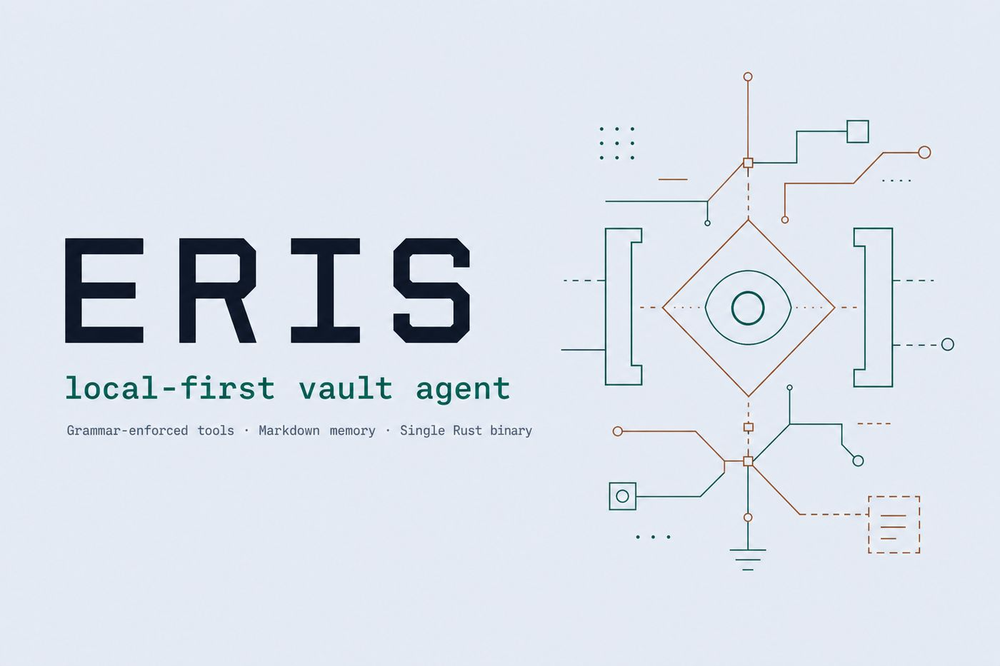
소형 로컬 모델로 에이전트를 운영할 때 닫는 중괄호 누락, 존재하지 않는 도구명 생성, JSON 뒤의 불필요한 텍스트 추가 등의 구조적 오류가 발생한다. Eris 개발자는 llama.cpp의 GBNF 문법을 활용해 이를 해결했다. 각 도구의 JSON Schema를 GBNF 규칙으로 컴파일하고, 샘플러가 토큰마다 문법상 유효한 후보만 마스킹하며, ToolRouter가 임베딩 유사도로 관련 도구만 선택하도록 제한함으로써 프로토콜 오류를 크게 감소시켰다.
핵심 포인트: 핵심 성과: Ollama에서 관찰된 턴당 35%의 프로토콜 오류를 llama.cpp와 GBNF 문법 적용으로 대폭 감소시켰으며, 약 50개 도구 중 관련 도구 35개만 문법에 포함해 할루시네이션을 방지했다.
🔗 eris-system.dev/blog/gbnf-grammars
기타 (Others)

DrawingVQA: 건설도면 멀티모달 추론 벤치마크
건설 도면 자동화에서 AI 모델이 직면한 근본적 한계는 추론력이 아니라 도면을 기계가 읽어낼 수 있는 인식 능력이다. DrawingVQA 벤치마크는 실제 시공용 구조도면 33장과 전문가 작성 92개 문항으로 최신 멀티모달 모델을 지각, 맥락 해석, 전문가 추론의 3단계로 평가한 결과, 모든 모델이 높은 추론이 필요한 문제에서 성능이 급격히 저하됨을 보였다. 도면을 단순히 이미지로 처리하기보다 텍스트, 기호, 좌표로 정규화하고 숫자를 결정론적으로 검증하는 전처리 단계가 도면 자동화의 핵심임을 시사한다.
핵심 포인트: 핵심 성과: 실제 발주도면과 전문가 문항으로 구성된 첫 건설도면 멀티모달 벤치마크를 제시했으며, 현재 최신 모델들이 전문가 수준과 큰 격차를 보이고 특히 높은 추론 단계에서 성능이 무너지는 것을 실증적으로 증명했다.
논문 (Papers)

ReOPD — AI 에이전트 학습 비용 4배 이상 절감하는 증류 기법
멀티턴 에이전트 학습에서 실시간 환경 구동과 교사 모델 쿼리로 인한 높은 비용 문제를 해결한다. Microsoft가 제안한 ReOPD(Replayed-Prefix On-Policy Distillation)는 사전 수집된 교사 궤적을 재사용하여 학생 모델이 선택된 단계에서만 행동하고 나머지는 교사로부터 밀집 감독을 받도록 함으로써 새로운 환경 상호작용 없이 학습을 진행한다. 이를 통해 무거운 환경 롤아웃과 도구 호출 없이도 학습 속도를 크게 향상시킨다.
핵심 포인트: 핵심 성과: 실시간 환경 구동 없이 멀티턴 에이전트 학습 속도 4배 이상 가속, 사전 수집 교사 데이터 재활용으로 학습 비용 대폭 절감
논문 (Papers)
Claude Mythos — 암호 알고리즘의 수학적 약점 발견
AI 모델이 단순 구현 오류를 넘어 암호 알고리즘 자체의 수학적 결함을 발견하는 새로운 단계에 진입했다. 앤트로픽의 Claude Mythos Preview는 양자내성암호 서명 HAWK의 키 강도를 절반으로 약화시키는 공격과 7라운드 AES에 대한 기존 공격을 200~800배 빠르게 수행하는 방법을 발견했다. API 비용 약 10만 달러를 투입해 4일 만에 발견했지만, 인간 연구자가 검증하는 데는 1개월 소요되어 발견 속도와 검증 속도의 격차를 드러냈다.
핵심 포인트: 핵심 성과: HAWK 공격은 60시간 내 새로운 방법 발견, AES 7라운드 공격 200~800배 고속화, 국산 경량암호 LEA 13라운드 키 복구를 1시간 내 데스크톱에서 수행. 핵심 기여: 알고리즘 설계 결함 발견으로 표준 변경과 장비 교체 필요 단계로 진전, 구현 버그 패치 수준을 초과하는 암호 분석 능력 입증.
🔗 anthropic.com/research/discovering-crypto…
기타 (Others)
Claude Opus 5 vs Fable 5 — 작업별 비용 기준 모델 선택 가이드
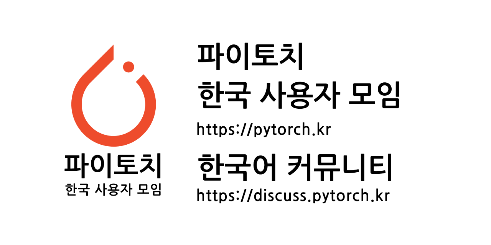
Claude Opus 5와 Fable 5는 동일한 100만 토큰 컨텍스트를 제공하지만 가격, 성능, 운영 조건이 다르다. 기존에는 벤치마크 순위와 토큰 단가로만 모델을 선택했으나, 실제 운영에서는 채택된 작업 비용을 중심으로 평가해야 한다. Opus 5를 기본 모델로 검증한 후 작업이 매우 복잡하거나 반복 실패 비용이 높을 때만 Fable 5로 상향하는 방식을 제시한다.
핵심 포인트: 핵심 기여: Opus 5는 Opus 4.8과 동일한 입력 5달러·출력 25달러의 반값 가격으로 공개되었으며, 100만 토큰 컨텍스트와 작업 난이도별 추론 수준 조절 기능을 제공하여 일상 기업 업무에서 Fable 5를 대체할 수 있다.
🔗 discuss.pytorch.kr/t/claude-opus-5-fable…
기타 (Others)
Kimi K3 — 오픈 모델, 클로즈드 모델 성능 추격에 가성비까지 확보
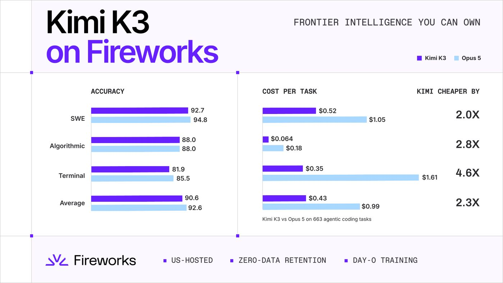
클로즈드 모델 오푸스 5 대비 1/5 수준의 가격으로 경쟁력 있는 성능을 제공하던 오픈 모델들의 한계를 극복하기 위해 키미 K3가 공개 당일부터 파이어웍스를 통해 서빙되기 시작했다. 독립 벤치마크에서 프론트엔드 코드 아레나 1위, 법률 벤치마크에서 페이블 5의 2배 성능을 달성했으며, 동시에 미국 전용 엔드포인트, 데이터 무보존, 코드 한 줄 파인튜닝 등 상용화 인프라를 즉시 제공하여 오픈 소스 모델의 실용성 문제를 해결했다.
핵심 포인트: 핵심 성과: 프론트엔드 코드 벤치마크에서 페이블 5를 제치고 1위 달성(오픈 모델이 클로즈드 전체를 앞선 최초 사례), 하비 법률 벤치마크에서 페이블 5의 2배 수준 점수 달성, 오푸스 5 대비 터미널 과제에서 최대 5배 가까운 비용 절감.
🔗 fireworks.ai/blog/kimik3-on-fireworks
기타 (Others)
Kimi K3: 문샷AI 280B 파라미터 모델 무료 공개
문샷AI가 280억 파라미터 규모의 Kimi K3 모델 가중치를 허깅페이스에 무료로 공개했다. 1.56테라바이트 용량의 모델은 96개 파일로 분산되어 있으며, 실제 구동 시에는 104억 파라미터만 활성화된다. 기존 K2.6 라이선스의 ‘Modified MIT’를 유지하면서 새로운 조항을 추가했는데, 연속 12개월 매출이 2천만 달러를 초과하는 API 기반 모델 대여 사업은 상업화 전 문샷과 별도 계약이 필요하다.
핵심 포인트: 핵심 성과: 280억 파라미터 대규모 언어모델을 오픈소스로 공개하면서 모델 제공 사업 수익 2천만 달러 이상 시 추가 계약이 필요한 라이선스 조건을 신규 도입.
🔗 huggingface.co/moonshotai/Kimi-K3
기타 (Others)
BabelTele — LLM 간 통신의 토큰 소비 40~50% 감축
LLM 간 통신 시 인간이 읽기 편한 완벽한 문장 작성이 불필요하다는 문제를 해결하는 연구. BabelTele은 문법을 제거하고 기호와 이모지로 텍스트를 극단적으로 압축하면서도 GPT, 클로드, 딥시크 등의 주요 LLM이 맥락을 대부분 이해할 수 있음을 실증적으로 증명했다. 멀티 에이전트 환경의 토큰 소비를 40~50% 줄이며, 에이전트 메모리 반복 조회 및 모델 간 통신 효율화에 활용 가능하다.
핵심 포인트: 핵심 성과: 문법 제거 및 기호/이모지 압축 시 멀티 에이전트 환경에서 토큰 소비 40~50% 감축, GPT/Claude/DeepSeek 등 주요 LLM이 의미론적 정보 보존 상태에서 해석 가능 확인
논문 (Papers)
Is GraphRAG Needed?: 복잡한 RAG가 항상 더 나은 것은 아니다
RAG 시스템이 Basic RAG에서 GraphRAG, Modular RAG, Agentic RAG로 복잡해지고 있지만, 반드시 더 복잡한 구조이 더 좋은 성능을 보장하지 않는다는 것을 보여주는 연구다. 정밀의료 분야의 12만 9천 개 엔티티와 810만 개 관계를 포함한 지식베이스에서 9가지 RAG 구성을 비교한 결과, 엔티티 설명에 1-hop 관계 정보를 텍스트로 추가한 단순한 기본 RAG(Hit@1: 0.6972, MRR: 0.7531)가 정교한 GraphRAG(Hit@1: 0.1376, MRR: 0.1542)보다 우수한 성능을 기록했다.
핵심 포인트: 핵심 성과: 잘 설계된 기본 RAG가 GraphRAG보다 약 5배 높은 Hit@1 성능을 달성했으며, 그래프 기반 방식만으로는 텍스트의 풍부한 의미와 문맥을 완전히 대체할 수 없음을 실증했다.
논문 (Papers)
ko-embedding-leaderboard — 한국어 임베딩 모델 공정 평가 리더보드
한국어 RAG 시스템과 검색 기능 개발 시 적합한 임베딩 모델 선택이 어려운 문제를 해결하는 오픈소스 프로젝트. MTEB 벤치마크를 한국어 환경에 맞게 커스텀하여 7가지 한국어 검색 데이터셋(Ko-StrategyQA, AutoRAGRetrieval, PublicHealthQA, LawIRKo 등)으로 임베딩 모델을 일관된 방식으로 평가하고 순위를 제공한다. NDCG@5와 NDCG@10 평균으로 측정하며, Sparse 임베딩과 Dense 임베딩을 분리하여 순위를 관리한다.
핵심 포인트: 핵심 기여: 영어 기반 벤치마크의 한국어 특화 커스터마이징으로 한국어 검색 환경에서 모델의 실제 성능을 공정하게 비교 평가할 수 있는 기준 제시, Version 2부터 정보 검색(IR) 과제에 집중한 평가 시스템 확립.
🔗 discuss.pytorch.kr/t/ko-embedding-leaderb…
기타 (Others)
Anthropic 모델 선택 가이드 — 작은 모델에 큰 모델을 조언자로 붙이는 하이브리드 아키텍처
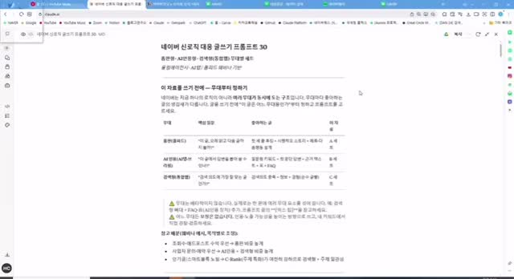
LLM 기반 시스템 구축 시 성능과 비용의 균형을 맞추기 위해 모델을 단순히 업그레이드하는 방식의 한계가 있다. Anthropic이 제시하는 해결책은 작은 모델을 주도적으로 실행하고 필요한 순간에만 큰 모델이 조언하는 계층적 구조다. 소넷 5에 페이블 5를 조언자로 붙였을 때 페이블 단독 점수의 10% 이내 성능을 유지하면서 비용을 63%까지 절감했으며, 소넷에 오푸스를 붙인 경우 점수는 상승하고 비용은 11.9% 감소했다.
핵심 포인트: 핵심 성과: 소넷 5에 페이블 5 조언자 적용 시 점수는 페이블 단독의 10% 이내 유지하면서 비용 37% 절감, 소넷+오푸스 조합에서 다국어 코드 문제 점수 2.7점 상승과 동시에 작업당 비용 11.9% 감소 달성.
🔗 threads.com/@unclejobs.ai/post/DbNffWpib8…
기타 (Others)
Claude 5: 컨텍스트 엔지니어링의 규칙 80% 제거
Claude 5 세대 모델의 성능 향상으로 기존 컨텍스트 엔지니어링 방식을 재검토해야 한다는 문제 제기. 앤트로픽의 Claude Code 팀은 시스템 프롬프트에서 80% 이상을 삭제했음에도 코딩 평가에서 측정 가능한 성능 손실이 없었다고 발표. 이는 기존의 촘촘한 규칙 축적 대신 규칙 대신 판단, 예시 대신 인터페이스 설계, 점진적 공개 등 여섯 가지 새로운 원칙으로 컨텍스트 엔지니어링 방식을 전환해야 함을 시사한다.
핵심 포인트: 핵심 성과: Claude Opus 5와 Fable 5에서 시스템 프롬프트 80% 이상 제거 후에도 코딩 평가에서 측정 가능한 손실이 없음. 앤트로픽은 모델 세대 상승에 따라 기존 규칙을 재평가하고 불필요한 컨텍스트를 정리하는 claude doctor 명령을 제공.
🔗 claude.com/blog/the-new-rules-of-context…
기타 (Others)
Claude Opus 5 — 지능보다 보안과 토큰 효율에 집중한 앤트로픽의 신전략
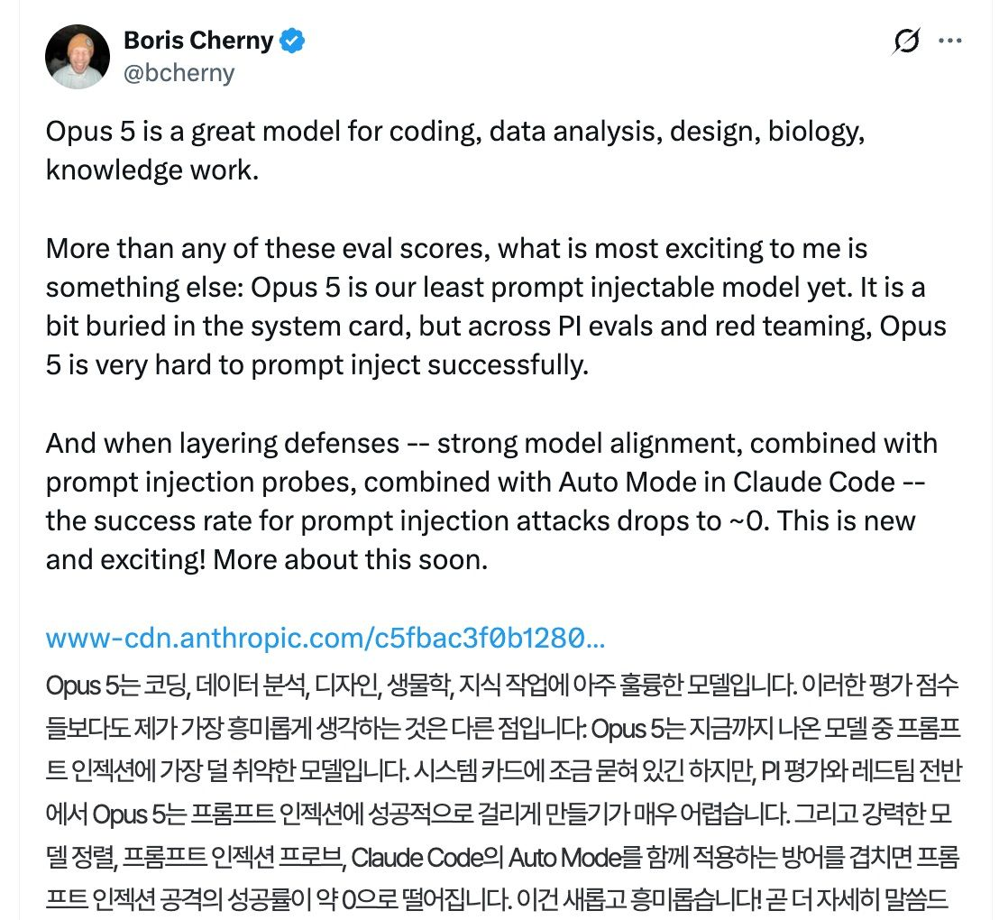
Claude Opus 5 출시 후 엇갈린 평가가 나오고 있다. 제3자 벤치마크에서 근소한 1위를 차지했지만 GPT-4o와 Claude 3.5 Sonnet과의 1점 차이로 논쟁이 일고 있다. 앤트로픽 직원들이 주목하는 것은 지능 수치가 아니라 프롬프트 인젝션 방어 능력과 토큰 효율이다. Boris Cherny는 강력한 모델 정렬과 인젝션 탐지 프로브의 조합으로 공격 성공률을 거의 0으로 낮췄다고 강조했고, Alex Albert는 모든 영역에서 향상된 토큰 효율을 핵심 성과로 제시했다.
핵심 포인트: 핵심 성과: Artificial Analysis 벤치마크에서 인텔리전스 지수 61로 1위 달성했으나 2위와 1점 차이이며, 프롬프트 인젝션 공격 성공률을 약 0%까지 감소시킨 보안 강화가 개발팀의 최우선 성취로 평가됨.
🔗 threads.com/@aicoffeechat/post/DbMei2QE_B…
기타 (Others)
Claude Opus 5 — Fable 5 수준 성능을 절반 가격에 제공
고성능 AI 모델의 높은 비용이 실무 활용을 제한하는 문제를 해결하기 위해 Anthropic이 Claude Opus 5를 출시했다. 이 모델은 Fable 5에 근접한 최첨단 지능을 절반의 가격으로 제공하며, 코딩 및 지식 작업 평가에서 새로운 최고 수준의 성능을 달성했다. 특히 ARC-AGI-3 벤치마크에서 차선 모델 대비 3배 높은 점수를 기록했으며, 다른 모델 대비 낮거나 유사한 비용으로 우수한 효율성을 제공한다.
핵심 포인트: 핵심 성과: Frontier-Bench와 GDPval-AA 평가에서 최신 수준의 성능을 달성했으며, ARC-AGI-3에서 차선 모델 대비 3배 높은 점수 기록. Claude Max의 새로운 기본 모델이자 Claude Pro의 최강 모델로 설정되어 일상적 사용을 위해 최적화됨.
🔗 anthropic.com/news/claude-opus-5
기타 (Others)
Claude Managed Agents — 에이전트별 사고 수준 조절 및 실시간 모니터링 기능 추가
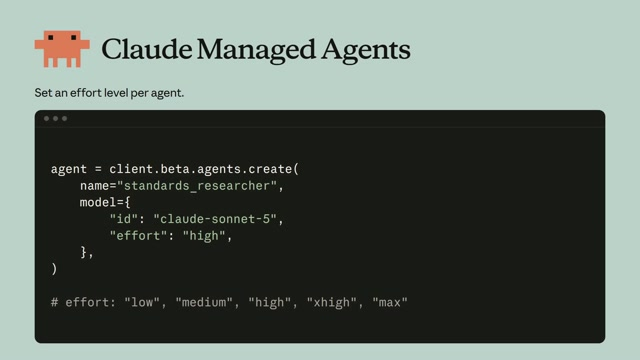
Claude Managed Agents에 다양한 운영 기능이 추가되었다. 에이전트마다 사고 수준을 설정하여 응답 속도와 비용을 유연하게 조절할 수 있으며, 세션당 최대 50개의 이벤트와 500개의 스킬을 활용할 수 있다. 환경과 메모리 저장소를 웹훅으로 연결하고, 하위 에이전트의 작업 과정을 실시간으로 확인할 수 있어 에이전트 운영과 모니터링의 효율성이 크게 향상되었다.
핵심 포인트: 핵심 기능: 에이전트 사고 수준 5단계(low, medium, high, xhigh, max) 조절, 세션당 최대 50개 이벤트 지원, 스킬 500개 상한선, 웹훅 연동 및 실시간 하위 에이전트 모니터링 구현
🔗 github.com/anthropics/claude-cookbooks/bl…
GitHub
Jacobian Lens — 언어 모델 내부 표현을 어휘로 해석하는 도구
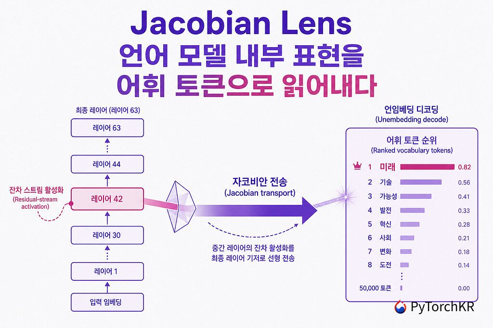
언어 모델의 중간 활성화는 고차원 벡터로 인해 직접 해석이 어려운 문제가 있다. 기존 로짓 렌즈는 모든 레이어가 동일한 좌표계를 사용한다고 가정하여 초반 레이어에서 해석 정확도가 낮다. Anthropic이 공개한 Jacobian Lens는 중간 레이어의 잔차 흐름을 야코비안 행렬을 이용해 어휘 토큰으로 투영함으로써 각 레이어별 고유한 좌표계를 반영하여 더 정확한 내부 표현 해석을 가능하게 한다.
핵심 포인트: 핵심 기여: 야코비안 기반 투영 방식으로 로짓 렌즈의 한계를 극복하여 초반 레이어부터 언어 모델의 내부 표현을 신뢰도 높게 해석할 수 있는 새로운 기법 제시.
🔗 discuss.pytorch.kr/t/jacobian-lens/11341
기타 (Others)
DEVTOOLS & OPEN SOURCE
Claude Code — 대규모 코드 마이그레이션을 위한 AI 에이전트 프로세스
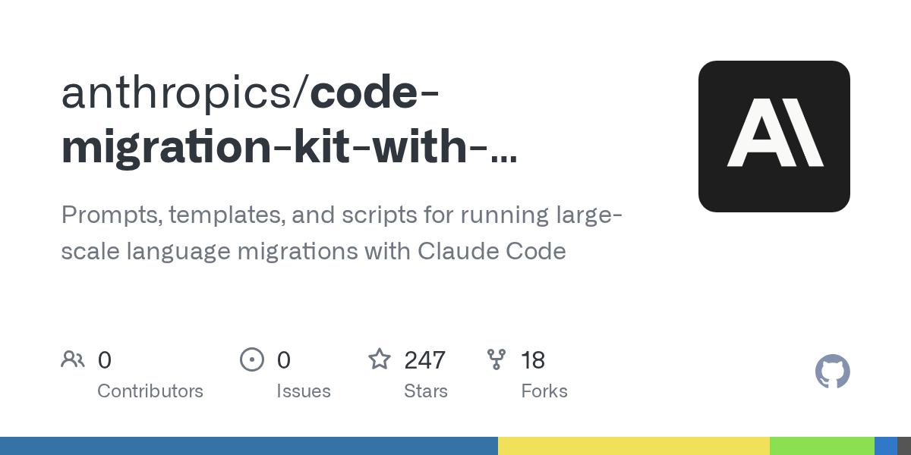
대규모 코드 마이그레이션 프로젝트에서 개별 코드 수정보다 프로세스 개선을 우선하는 새로운 방법론을 제시한다. Anthropic이 공개한 마이그레이션 키트는 룰북 기반 접근으로 반복되는 실패를 시스템적으로 해결하며, Bun의 100만 줄 Zig에서 Rust 포팅을 2주 만에 완성하고 기존 테스트 100% 통과를 달성했다. 룰북은 에이전트 간 일관성을 보장하는 중앙 집중식 결정 문서로 기능하며, 베이크오프와 대조 검증을 통해 마이그레이션 품질을 보증한다.
핵심 포인트: 핵심 성과: 100만 줄 규모 언어 포팅을 2주 안에 완료하고 기존 테스트 스위트 100% CI 통과 달성. 576줄 룰북과 베이크오프 검증 프로세스로 수백 개 에이전트 간 일관성 확보 및 파이썬 16.5만 줄을 TypeScript로 변환한 다중 페이즈 마이그레이션 지원.
🔗 github.com/anthropics/code-migration-kit…
GitHub
Codex Security CLI — OpenAI의 오픈소스 코드 취약점 검사 도구
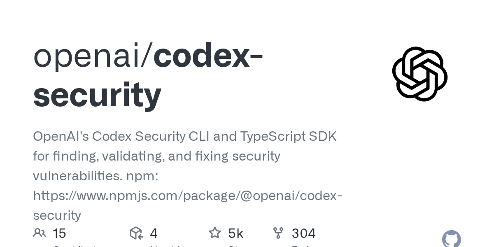
코드 저장소의 보안 취약점을 자동으로 찾고 검증하며 수정안을 제시하는 오픈소스 도구의 필요성에 응답하여 OpenAI가 Codex Security CLI를 공개했다. Apache-2.0 라이선스의 npm 패키지로 제공되며, 커밋 전 훅이나 CI 파이프라인에 통합하여 변경분만 검사하거나 심각도 기준에 따라 빌드를 제어할 수 있다. SARIF 형식으로 결과를 내보내 기존 보안 도구와 호환되며, gpt-5.6-sol 모델에 extra-high 추론 강도로 설정되어 있다.
핵심 포인트: 핵심 성과: 저장소 전체 스캔에 수십 분 소요되지만 변경분 중심 검사로 반복 개발에 최적화되었으며, 이전 스캔과의 비교를 통해 고쳐진 항목과 재발생 항목을 구분해 제시한다.
🔗 github.com/openai/codex-security
GitHub
Buzz — 잭 도시의 자체 호스팅 팀 채팅, AI 에이전트, Git 통합 플랫폼
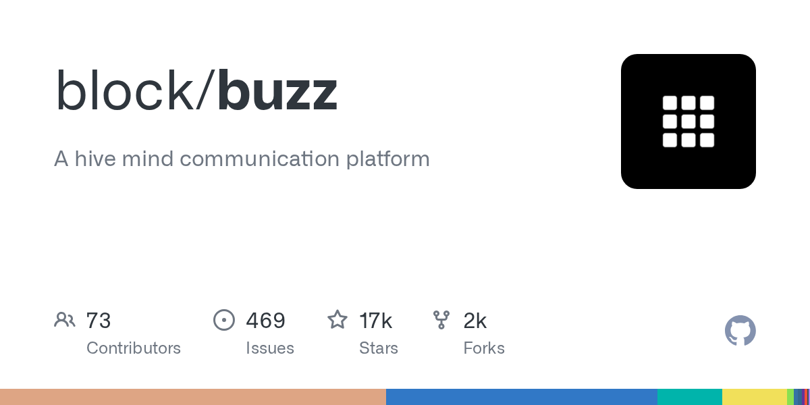
Slack과 GitHub 같은 외부 플랫폼에 종속되어 데이터 주권을 잃는 문제를 해결하기 위해 Block이 오픈소스 플랫폼 Buzz를 출시했다. Slack 인터페이스와 유사하지만 AI 에이전트가 정식 멤버로 참여하고, Git 호스팅이 내장되어 있으며, 모든 데이터와 모델을 자체 서버에서 운영할 수 있다. 셀프 호스팅 방식으로 팀이 데이터, 대화, 코드, 모델에 대한 완전한 소유권을 확보한다.
핵심 포인트: 핵심 기여: AI 에이전트에게 독립적인 계정과 암호키를 부여해 정식 팀 멤버처럼 작동하게 하고, 채팅·코드 리뷰·에이전트 작업이 한 창에서 통합되며, 셀프 호스팅으로 데이터 주권과 모델 선택의 자유를 보장한다.
GitHub
Chonkie — RAG 성능을 결정하는 경량 문서 청킹 라이브러리
RAG 시스템의 성능이 문서 청킹 단계에서 크게 좌우된다는 점을 해결하기 위한 라이브러리. Chonkie는 토큰, 문장, 재귀, 의미유사도, 코드 구조 등 10종 이상의 청커를 통합하고, SIMD 가속 FastChunker로 100GB/s 속도를 달성한다. Pipeline API로 청킹부터 임베딩까지 비동기로 처리하며, Chroma, Qdrant, Weaviate, Milvus 등 10개 이상 벡터 DB와 직접 연동된다.
핵심 포인트: 핵심 성과: 505KB 경량 설치, 56개 언어 지원, 100GB/s급 처리 속도, 10개 이상 벡터 DB 직통 연동, REST API와 Docker 한 줄 배포 지원
GitHub
Ontology Playground — 브라우저에서 온톨로지를 시각적으로 학습하고 설계하는 오픈소스 웹앱
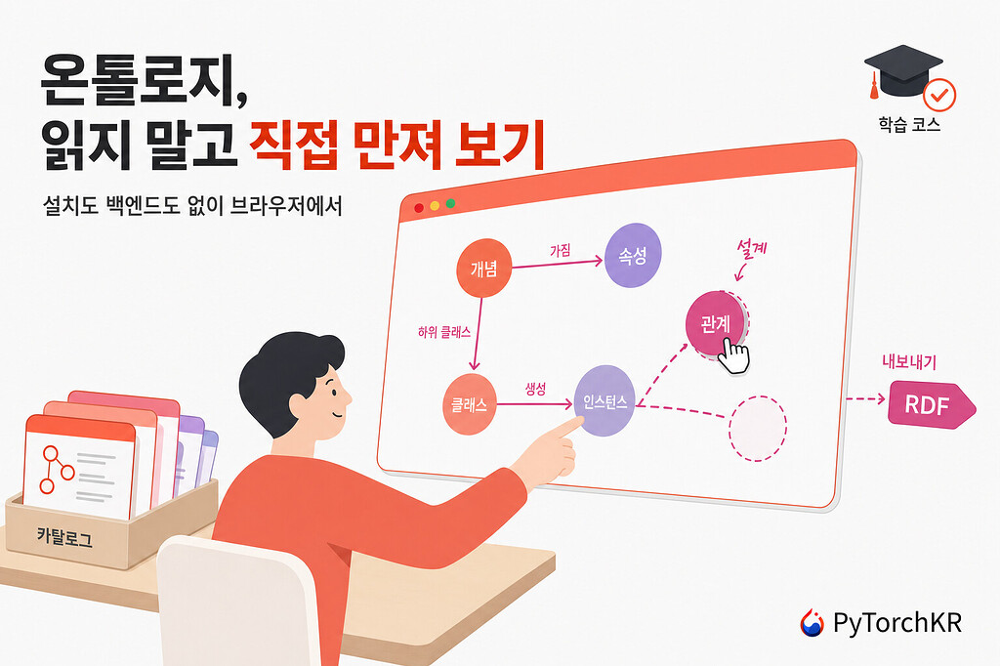
온톨로지 개념을 이해하고 설계하기 어려운 문제를 해결하기 위해 Microsoft가 공개한 무료 오픈소스 웹 애플리케이션이다. 문서 설명 대신 대화형 그래프 탐색, 비주얼 에디터, 실습 문제를 통해 온톨로지 개념을 직접 체험하게 한다. 백엔드 없이 정적 사이트로 동작하며 RDF/XML 가져오기 및 내보내기를 지원하고, Microsoft Fabric IQ 프로젝트 시작 전 데이터 모델 프로토타이핑에 활용할 수 있다.
핵심 포인트: 핵심 기여: Cytoscape.js 기반 인터랙티브 온톨로지 그래프, 비주얼 디자이너를 통한 엔티티 및 관계 설정, 산업별 온톨로지 카탈로그 제공, 단계별 학습 과정 및 자연어 질의 인터페이스 포함으로 온톨로지 진입장벽을 크게 낮춤.
🔗 discuss.pytorch.kr/t/ontology-playground…
기타 (Others)
Open Minis — 폰에서 직접 실행하는 온디바이스 AI 에이전트
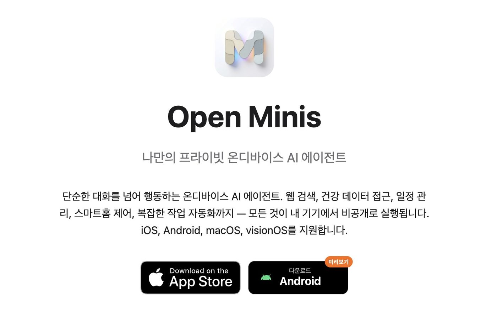
기존 AI 앱들은 대화창 내에서만 작동하고 폰의 실제 기능을 제어하지 못하는 한계가 있었다. Open Minis는 폰 내에 샌드박스 Linux 환경을 구동하여 Claude, GPT, Gemini 같은 LLM을 탑재하고, Apple 공식 API를 명령어로 변환해 사진첩 검색, 걸음 수 조회, 홈킷 제어, 화면 자동화 등 실제 작업을 수행할 수 있게 한다. 공개 이틀 만에 GitHub 별 2천 개를 넘긴 1인 개발 프로젝트로, iOS와 Android에서 무료로 제공된다.
핵심 포인트: 핵심 성과: 폰 내 Linux 환경에서 에이전트가 직접 코드 실행, 파일 조작, 패키지 설치를 수행하며, Apple 공식 API 통합으로 다른 AI 앱과 기술적으로 완전히 차별화되어 빠른 응답과 정확한 답변 제공.
🔗 github.com/OpenMinis/OpenMinis
기타 (Others)
claude-overnight — Claude 할당량을 야간 자동 처리하는 오픈소스 도구
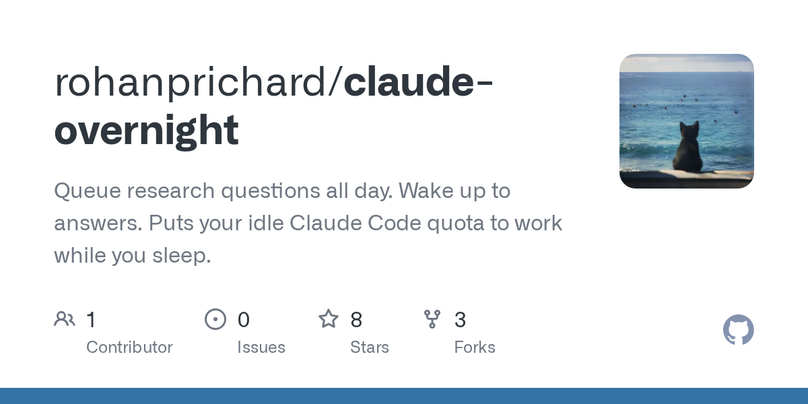
Claude API의 일일 할당량이 밤마다 리셋되면서 사용하지 못한 쿼타가 낭비되는 문제를 해결하는 오픈소스 도구. 낮 동안 작업과 질문을 큐에 쌓아두면 밤 시간대 할당량이 리셋되는 시점에 자동으로 Claude가 코딩 및 리서치를 수행하고, 사용자는 아침에 완성된 마크다운 리포트와 Git 브랜치를 확인할 수 있다.
핵심 포인트: 핵심 성과: 매일 낭비되던 Claude Code 주간 할당량을 자동화된 배치 처리로 활용하며, 일일 5시간 제한을 초과하지 않으면서도 심야 시간대 리셋을 이용해 추가 작업 처리 가능.
🔗 github.com/rohanprichard/claude-overnight
블로그 (Blog)
GigaToken — HuggingFace보다 최대 1000배 빠른 Rust 기반 LLM 토크나이저
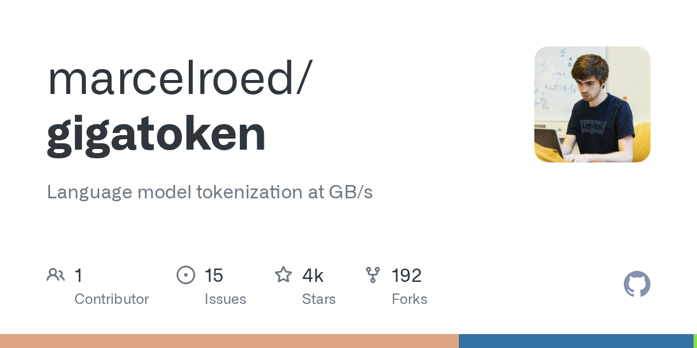
대규모 언어 모델 학습 시 수 테라바이트 규모의 텍스트를 토큰으로 변환하는 과정에서 심각한 병목이 발생하는 문제를 GigaToken이 해결한다. Rust 기반으로 SIMD 최적화와 캐시 기법을 적용하여 초당 기가바이트 단위의 토큰화 처리 속도를 달성했으며, AMD EPYC 9565에서 GPT-2 토크나이저 기준 초당 24.53GB로 HuggingFace Tokenizers의 약 989배 성능을 기록했다.
핵심 포인트: 핵심 성과: Apple M4 Max에서 약 1,268배, AMD EPYC 9565에서 약 989배의 토크나이저 처리 속도 달성. 130조 토큰 규모 데이터를 6.5시간 내에 토큰화 가능하며 기존 HuggingFace/tiktoken과의 드롭인 호환성 제공.
🔗 github.com/marcelroed/gigatoken/
기타 (Others)
LoopGain — AI 에이전트 루프 비용을 제어이론으로 최적화하는 오픈소스
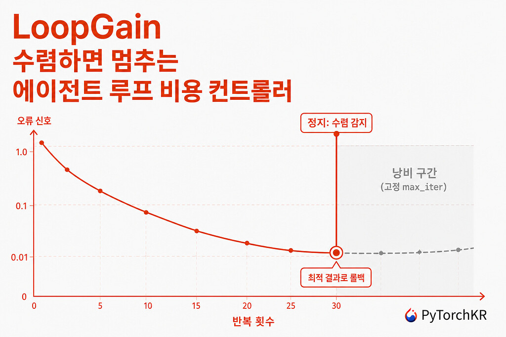
AI 에이전트의 자기 수정 루프가 언제 멈춰야 할지 모르면 이미 답을 얻은 후에도 계속 반복하며 연산 비용을 낭비한다. 기존의 고정된 maxiterations 정책은 상한을 크게 잡으면 낭비가 많고 작으면 미완성 결과를 내보내는 딜레마를 안고 있다. LoopGain은 전기공학의 피드백 발진 분석에서 나온 바크하우젠 조건을 활용해 루프의 오류 신호를 실시간으로 측정하고, 실제로 수렴한 순간 멈추거나 품질이 나빠지면 최고 지점으로 되돌리는 방식으로 이 문제를 해결한다.
핵심 포인트: 핵심 기여: LangGraph, CrewAI, AutoGen, LangChain, OpenAI Agents SDK, Claude Agent SDK 등 주요 에이전트 프레임워크 어댑터를 기본 제공하며, 순수 파이썬으로 작성돼 런타임 의존성이 없어 모든 반복 워크플로에 즉시 적용 가능하다.
🔗 discuss.pytorch.kr/t/loopgain-ai/11375
기타 (Others)
Slide Meme Inserter: AI가 발표 슬라이드에 문맥 맞춘 밈 자동 삽입
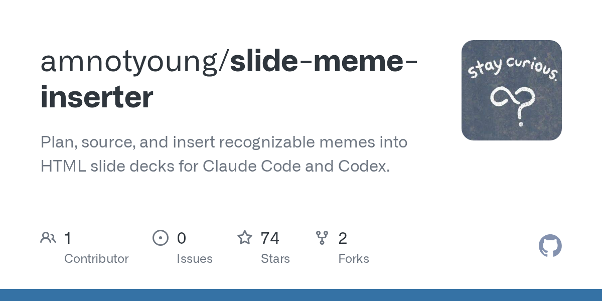
AI로 생성한 HTML 슬라이드는 효율적이지만 발표자의 개인적 유머 감각이 사라지는 문제를 해결하는 도구. Slide Meme Inserter는 발표 흐름을 분석하고 문맥, 청중, 타이밍에 맞춰 유명 밈을 자동으로 선택해 위치와 캡션을 지정해 삽입한다. 기획 단계부터의 적용과 완성된 슬라이드 후처리 모두 가능하며, 밈 다양성 기준과 권리 모드를 통해 상황별 수준 조절이 가능하다.
핵심 포인트: 핵심 기여: Claude Code와 Codex 동시 지원, 한국 밈 정적 이미지 출처 계층 추가, 70개 이상 밈 후보 다양성 기준 적용, 일회성 발표용 practical 모드와 공유용 strict 모드 제공으로 유머와 효율성의 균형 실현.
🔗 github.com/amnotyoung/slide-meme-inserter
GitHub
OpenWorker — 앤드류 응의 오픈소스 AI 에이전트, 로컬에서 실제 업무 자동화
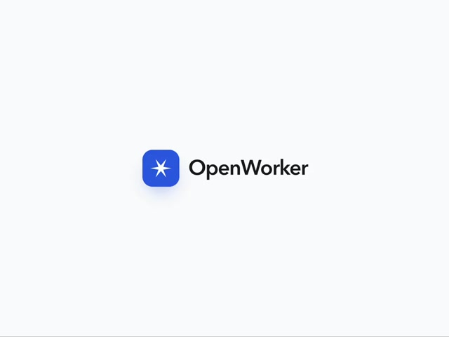
기존 AI 챗봇은 대화만 제공하지만, OpenWorker는 문서 초안, 슬랙 메시지, 캘린더 정리 등 실제 완성된 결과물을 직접 생성한다. 사용자의 맥에서 로컬로 실행되며 파일, 슬랙, 구글 캘린더 등 일상 도구를 연동하여 작업을 처리한다. 중요한 작업 실행 전 사용자 확인을 거치며, OpenAI, Anthropic, Google API는 물론 Ollama 로컬 모델까지 자유롭게 선택 가능하여 특정 모델에 종속되지 않는다.
핵심 포인트: 핵심 성과: 로컬 실행 방식으로 데이터 프라이버시 보장하며, GPT-5.6 Sol, Claude Fable, Gemini 3.6, Kimi, GLM, 딥시크 등 다양한 모델 자유 선택 가능. macOS 공식 지원, 윈도우 지원 준비 중이며 전체 코드 공개.
🔗 github.com/andrewyng/openworker
GitHub
Hallmark — AI가 만든 획일적 웹 디자인을 거부하는 오픈소스 스킬
LLM 코딩 에이전트가 웹 디자인을 생성할 때 동일한 그라디언트, 카드 레이아웃, 여백 조합 등 획일적인 결과물을 반복하는 문제를 해결하는 디자인 스킬. Hallmark는 프롬프트 조정 대신 매크로구조 선택, 20개 이상의 디자인 테마, 57개의 품질 게이트와 자기 비평을 통해 구조부터 다른 UI를 생성하도록 강제한다. Claude Code, Cursor, Codex에서 동작하는 MIT 오픈소스이며, GitHub 일간 트렌딩에서 하루 1,010개 스타를 기록했다.
핵심 포인트: 핵심 기여: 색상 변경이 아닌 페이지 매크로구조 자체를 달리하고, 57개의 AI 슬롭 방지 규칙과 자체 비평 메커니즘으로 생성된 디자인의 다양성을 보장하며, 누적 스타 6,099개 중 약 1,010개가 단일 날짜에 기록되어 개발자 커뮤니티의 높은 수요를 입증했다.
🔗 discuss.pytorch.kr/t/hallmark-ai/11348
기타 (Others)
OpenWorker — 앤드류 응의 오픈소스 AI 에이전트
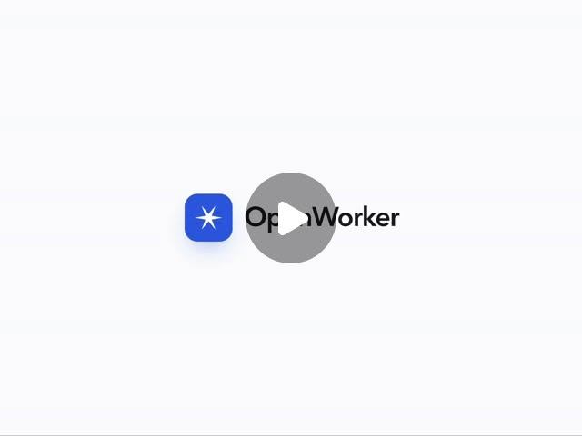
기존 AI 대화형 도구는 결과물 생성까지 사용자가 직접 처리해야 하는 문제가 있다. OpenWorker는 오픈소스 에이전트로서 사용자의 요청을 받으면 문서 작성, 슬랙 메시지 전송, 일정 등록 등 실제 작업 완료까지 자동으로 처리한다. 로컬 환경에서 실행되며 데이터가 기기 밖으로 나가지 않고, 모델 제약이 없어 GPT, Claude, Gemini 등 원하는 LLM을 자유롭게 교체할 수 있다.
핵심 포인트: 핵심 기여: 100% 오픈소스 기반으로 특정 AI 모델에 종속되지 않으며, 사용자가 보유한 API 키로 언제든 모델을 교체 가능한 모듈식 구조 제공. 파일, 슬랙, 캘린더 등 일상 업무 도구와 직접 통합되어 다단계 작업을 자동 완료한다.
🔗 threads.com/@aicoffeechat/post/DbJolwQipV…
기타 (Others)
Hyperframes — AI가 HTML로 만드는 모션그래픽 영상 프레임워크
AI 에이전트가 모션그래픽 영상을 제작할 때 After Effects 같은 전문 도구 대신 HTML을 사용하면 창의성이 높아진다는 문제를 해결하는 오픈소스 프레임워크. LLM의 학습 데이터가 대부분 웹페이지이기 때문에 HTML이 AI 모델에게 가장 자연스러운 언어이며, 브라우저의 비동기 로딩 문제를 해결하기 위해 시계를 멈추고 프레임 단위로 강제 시간 이동하는 방식을 적용해 일관된 영상 생성을 실현한다.
핵심 포인트: 핵심 성과: 90일간 130만 번 사용, GitHub 스타 3.2만개, 사용자 26.7만명을 달성했으며, 순수 HTML 기반 접근으로 After Effects나 Lottie 같은 기존 도구 대비 AI 모델의 창의적 결과물 품질을 대폭 향상시켰다.
🔗 threads.com/@takepage_/post/DbItTExjzt3?x…
기타 (Others)
LangChain: Eval Engineering Skill으로 에이전트 평가 자동화
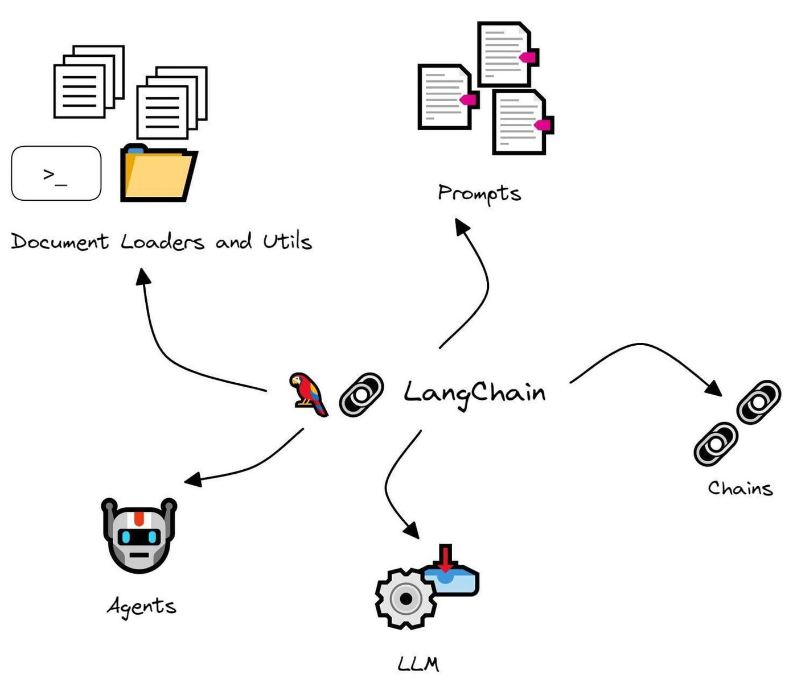
자율 학습이 가능한 AI 에이전트의 성능을 평가하기 위한 기준을 수립하기 어려운 문제를 해결한다. LangChain의 Eval Engineering Skill은 저장소 구조와 실제 에이전트 실행 추적 데이터를 분석하여 테스트 대상 능력을 자동으로 제안하고, 사용자의 피드백을 통해 반복적으로 개선된 실행 가능한 평가 벤치마크를 생성한다. 운영 데이터 수집에서 평가 생성, 에이전트 개선으로 이어지는 완전 자동화된 평가 엔지니어링 파이프라인을 구현한다.
핵심 포인트: 핵심 기여: 에이전트 추적 데이터와 코드 컨텍스트 분석을 통해 맞춤형 평가 벤치마크를 자동 생성하며, Harbor 형식의 실행 가능한 Eval을 즉시 활용 가능하게 제공한다.
🔗 langchain.com/blog/towards-automating-eva…
기타 (Others)
ENGINEERING
BIM 및 디지털 트윈 기반 실시간 유지보수 모니터링 시스템
건설물의 유지보수 효율성 저하와 안전 관리의 어려움을 해결하기 위해 BIM과 디지털 트윈 기술을 통합한 실시간 모니터링 시스템을 개발했다. LOD 400 수준의 BIM 모델에 진동, 기울기, 조도, 공기질, 수위 감지 등 IoT 센서 데이터를 통합하여 Autodesk Forge API와 WebSocket을 통해 웹 대시보드에 시각화한다. 2024년 10월 22일부터 11월 7일까지의 실증 운영에서 조도 센서 90% 이상의 전송률을 달성했으며, 조도 이상과 구조적 변위 등의 이상 탐지를 성공적으로 수행했다.
핵심 포인트: 핵심 성과: 실시간 디지털 트윈 기반 구조 건전성 모니터링으로 조도 센서 90% 이상 전송률 달성, 구조적 이상 조기 감지를 통한 예방 유지보수로 시설 수명 연장 및 유지보수 비용 절감.
🔗 mdpi.com/2075-5309/15/8/1312
기타 (Others)
PRODUCT & INDUSTRY
Anthropic — 오픈 가중치 모델 공식 입장 발표, 안전성과 개방성의 균형점 모색
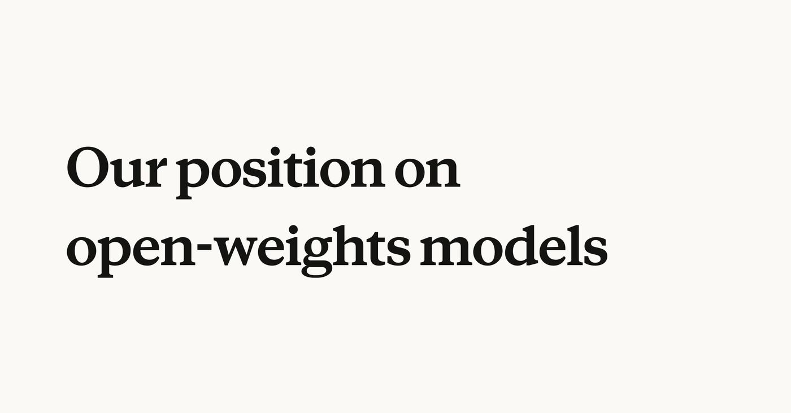
AI 업계에서 오픈 가중치 모델의 공개 범위를 두고 논쟁이 가열되고 있다. Anthropic은 공식 입장을 통해 안전성을 이유로 신중한 태도를 취하고 있으며, 동시에 오픈 가중치 모델 자체를 규제하려는 시도에는 반대 입장을 명확히 했다. 업계에서는 위험한 기능이 없는 오픈 가중치 모델을 공공의 이익으로 보는 입장과, 이미 흐름을 바꿀 수 없다는 주장이 팽팽하게 맞서고 있으며, 가중치 공개의 안전성과 개방성 간 균형점 찾기는 향후 핵심 과제로 남아 있다.
핵심 포인트: 핵심 성과: Anthropic이 오픈 가중치 모델 규제 반대 입장을 명시하면서, 기업 이익 추구 의혹을 불식시키고 안전성과 개방성의 균형 논의 기반을 마련했다.
🔗 anthropic.com/news/position-open-weights…
기타 (Others)
Kill AI Slop — AI가 만드는 똑같은 못생긴 디자인 제거 가이드
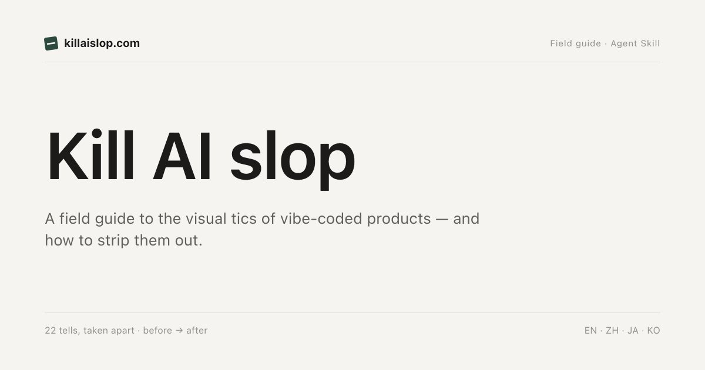
AI 모델이 생성하는 UI/UX는 인디고 그라디언트, 유리 카드, 이모지, 배지 등 동일한 요소들을 무분별하게 조합해 전형적이고 촌스러운 결과물을 만든다. Kill AI Slop은 이러한 AI Slop 패턴 34가지를 카테고리별로 분류하고 HTML 기반 비교 도구로 시각화하며, 한 줄 명령어로 설치 가능한 스킬로 코드에서 슬롭 후보를 자동 감지해 디자인 품질을 개선하도록 돕는다.
핵심 포인트: 핵심 기여: 프레임워크 기본값에서 비롯된 AI Slop을 색상, 타이포, 카피, 컴포넌트, 모션, 레이아웃 6개 범주로 정리했으며, 파일 수정 없이 스캔만 수행하고 의도적 선택과 기본값을 구분해 진정한 디자인을 판별하는 기준을 제시한다.
🔗 threads.com/@unclejobs.ai/post/DbOQgi9ias…
기타 (Others)
Humalike × Hermes — 그룹 채팅에 사회성 갖춘 AI 에이전트 플러그인
Hermes 에이전트가 그룹 채팅에서 모든 메시지에 응답하고 과도하게 긴 답변을 제공하는 문제를 해결하는 Humalike 플러그인이 출시되었다. 턴테이킹, 페르소나, 마음의 이론 등의 기능으로 에이전트가 언제 말하고 언제 침묵할지를 판단하며, 그룹의 말투에 맞춰 자연스러운 짧은 메시지로 응답한다. 기본 모델을 수정하지 않고도 한 줄의 명령어로 Slack, Telegram, WhatsApp 등에 즉시 적용 가능하다.
핵심 포인트: 핵심 기여: 모델 재학습 없이 프롬프팅 기법만으로 에이전트의 사회적 맥락 이해도를 향상시켰으며, 대화의 자연스러움을 평가하는 새로운 기준을 제시했다.
기타 (Others)
LOD 400: BIM 프로젝트의 설계-시공 간극을 메우는 핵심 기술
건축 정보 모델링(BIM)에서 설계 단계(LOD 300)와 실시공 단계(LOD 500) 사이의 모호함으로 인한 오류와 비용 증가 문제를 LOD 400이 해결한다. LOD 400은 정확한 치수, 장착 요구사항, 제품별 세부정보를 포함한 제조 준비 완료 모델을 제공하여 충돌 감지 정확도를 높이고, 조립식 제조를 촉진하며, 프로젝트 일정을 단축시킨다.
핵심 포인트: 핵심 기여: LOD 400은 현장 오류 및 재작업 최소화, 정확한 충돌 감지로 시공 전 문제 해결, 조립식 제조 촉진으로 프로젝트 납기 단축 등을 실현하여 의료, 인프라, 산업 분야의 고성능 프로젝트에서 투자 대비 효율성을 극대화한다.
🔗 kr.linkedin.com/pulse/why-lod-400-secret…
기타 (Others)
Buzz — 사람과 에이전트가 공유하는 셀프호스팅 워크스페이스
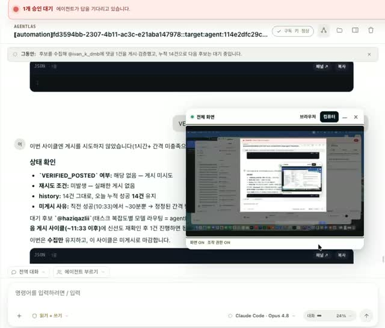
개발팀이 Slack, GitHub, Jira를 따로 관리하면서 에이전트 연동 작업을 반복하는 문제를 해결하기 위해 Block이 개발한 buzz는 사람과 에이전트가 동일한 이벤트 로그를 공유하는 셀프호스팅 워크스페이스이다. 에이전트도 사람처럼 독립적인 계정으로 참여하며, Git 연동을 통해 코드 리뷰와 서명 커밋을 채팅 내에서 처리하고, YAML 기반 워크플로우로 메시지, 반응, 스케줄, 웹훅을 자동화할 수 있다.
핵심 포인트: 핵심 성과: 런칭 첫날 GitHub에서 Rust 트렌딩 상위권을 기록하며 2,710개의 스타를 획득했으며, buzz-cli로 JSON만 주고받으면 모든 언어의 에이전트를 즉시 연동할 수 있다.
🔗 threads.com/@think.5x/post/DbHU8k2E7lR?xm…
기타 (Others)